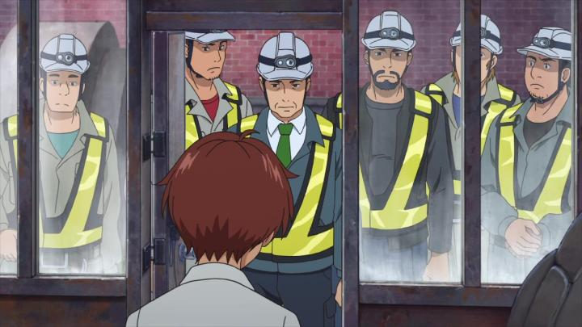

Shame on me for judging a book by its cover. From the start, I assumed the 2019 anime film "Seven Days War" (also known as "Our Seven-Day War") would be about juvenille misfits that run away from home for childish or selfish reasons, and hide out in an abandoned factory for a week, until they realize the trouble and worry they cause for their parents and each other. The scenario turns out to be more complex than that. In fact, the film, and the kids in it, surprised me over and over, and I was increasingly entertained right up to the end.It all starts with Mamoru, a typical sky, high-school kid, and a bit of a history geek. He learns that his childhood friend and secret crush, Aya, will be moving out of town for her father's new political role. In a last-chance effort to confess his love, he suggests to Aya that she run away with him as an act of rebellion against her father, just to hide until her 17th birthday a week later. To his surprise, she agrees, and to his disappointment, she invites extra friends to join them on the adventure. Within a few minutes into the movie, six high-school friends, some who get along and some who don't, hide away in an abandoned mining factory on the outskirts of town, fully prepared with clothes and food, all for the shared goal of supporting Aya. But things get complicated when a seventh member, a child named Malet, is discovered to already be hiding in the factory. Malet's a Thai illegal immigrant that got separated from family during a government raid, and has been waiting for the parents to find their way back ever since. Government workers have already tracked their way to the factory, and the teenagers decide to protect Malet. Things escalate with government, police, safety workers, and the media all trying to get into the factory, in addition to parents worried about their kids (or in the case of Aya's father, his reputation).This twist makes the story less about simply hiding out, but more of a genuine war of defense with kids versus adults. Mamoru's knowledge of history and war inadvertedly makes him a tactical strategist, well-suited to plan and guide the rest to counter the adults. They don't need to "beat" them or hurt them, only play defensively to keep them from taking anyone in the group outside of their make-shift fortress. The adults, on the other hand, have responsibilities and optics to consider: they can't hurt the kids, or put them in situations of danger (both morally, and for the legal trouble it would cause them). Over the course of multiple days, the two sides play real-time chess (my analogy, not the film's), where if the kids can put the adults in "check-mate" (where they can't make any new moves to continue forward), then the adults retreat to regroup and the kids can stay for another day.  I increasingly grew excited to watch the action and plans from both sides play out. The stakes of the situation kept getting higher, and it got more engaging. There are moments of drama when the teenagers clash with each other, including a late climax when secrets suddenly come out in the open - I understand why this was part of the story, but this was less interesting to me, as I didn't care all that much about the simplistic sterotypes each character fullfilled. But even this became worthwhile when, predictably, the characters start making confessions to each other, starting with Mamoru. This did NOT go where I expected it to go, showing how forward-thinking the story was, and I nearly cheered in my seat. The movie might not be consistently smart, but it's surprisingly entertaining. Despite some complex themes, the movie is relatively light-hearted and full of humour. It reminded me a lot of the tone of 2016's "Your Name." Speaking of which, there are multiple RADWIMPS-style pop songs throughout the movie. It all comes together as a fairly breezy but thrilling adventure. The one weak-point, if any, is the production values. I'm being a little harsh on the art and animation: it's good and it's consistent, but it's all kind of uninspired, and not much better than a modern-day television anime. What struck me is that there was no particular reason for this to be animated opposed to live-action, and it doesn't take advantage of designs or colour to support it. On a related note, the movie is inspired by a novel, which did result in a live-action film adaptation, and there are clever nods to it in this movie, both in the world lore and in the voice acting (the Japanese dub has one of the old actors return in the cast). Personally, I found the English dub to be quite strong, if somewhat typical, especially for such a large cast. You'd make a mistake to sleep on "Seven Days War." It's an easy crowdpleaser, and while it's not perfect, it's still a lot of fun.
- "Ani" More reviews can be found at : https://2danicritic.github.io/ Previous review: review_Serial_Experiments_Lain Next review: review_Seven_Mortal_Sins,_The_Seven_Heavenly_Virtues